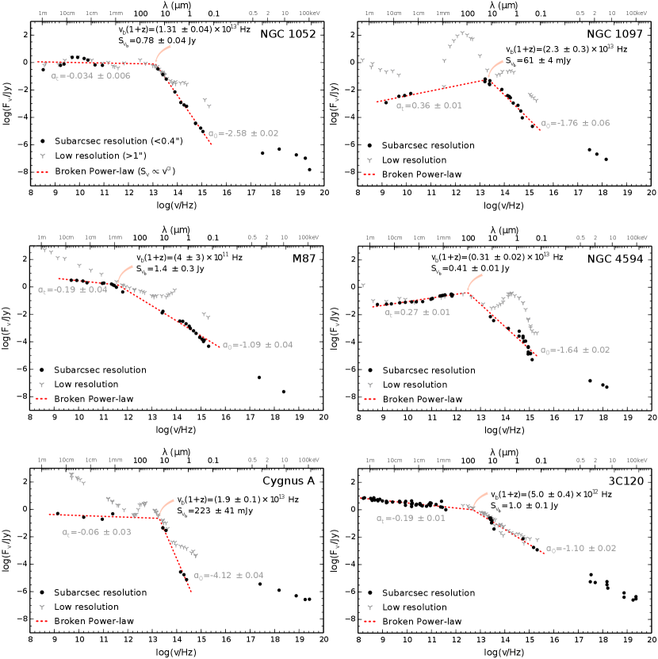
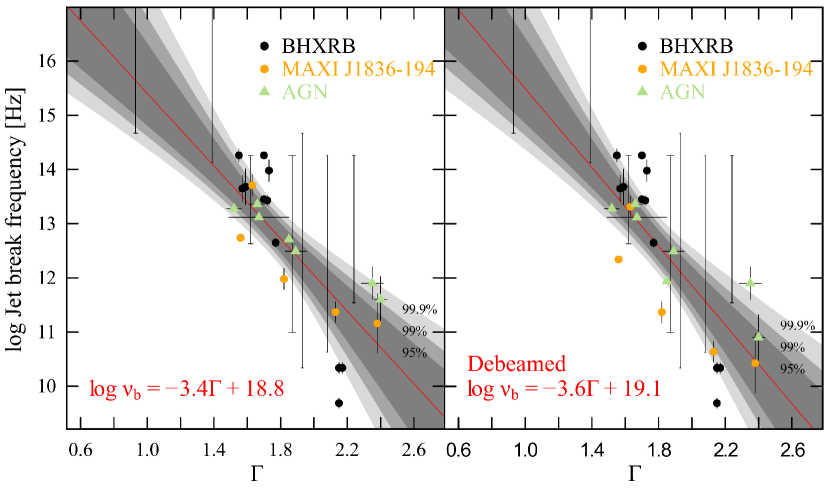

صلة بين ظروف البلازما قرب آفاق أحداث الثقوب السوداء وخصائص التدفقات الخارجة
الملخص
الثقوب السوداء التي تتراكم عليها المادة مسؤولة عن إنتاج أسرع وأقوى التدفقات الخارجة من المادة في الكون. وما تزال عملية تكوّن النفاثات القوية قرب الثقوب السوداء غير مفهومة جيدًا، كما أن الظروف التي تؤدي إلى تكوّن النفاثات محل نقاش حاد في الوقت الراهن. في هذه الورقة، نعرض ارتباطًا تجريبيًا واضحًا بين خصائص البلازما القريبة من الثقب الأسود وخصائص تسارع الجسيمات داخل النفاثات المنطلقة من المناطق المركزية للثقوب السوداء المتراكمة ذات الكتل النجمية وفائقة الكتلة. في هذه المصادر يتميز انبعاث البلازما قرب الثقب الأسود بقانون قوى عند طاقات الأشعة السينية في الأوقات التي تُنتج فيها النفاثات. ونجد أن فهرس الفوتونات لهذا القانون القوي، الذي يعطي معلومات عن توزيع الجسيمات الكامن، يرتبط بتردد الانكسار المميز في طيف النفاثة، وهو تردد يعتمد على العمليات المغناطيسية-الهيدروديناميكية في التدفق الخارج. يمتد النطاق المرصود لترددات الانكسار على خمسة رتب مقدار، في مصادر تمتد كتل ثقوبها السوداء على تسعة رتب مقدار، كاشفًا عن تشابه في خصائص النفاثات عبر نطاق كبير من كتل الثقوب السوداء التي تمد هذه النفاثات بالطاقة. يبيّن هذا الارتباط أن الخصائص الداخلية للنفاثة تعتمد على نحو حاسم على ظروف البلازما القريبة من الثقب الأسود، لا على معلمات أخرى مثل كتلة الثقب الأسود أو دورانه، وسيوفر معيارًا ينبغي أن تعيد نماذج تكوّن النفاثات إنتاجه.
1. مقدمة
تنتج النفاثات القوية من البلازما عن الثقوب السوداء التي تتراكم عليها المادة بمختلف أحجامها، من الثقوب السوداء ذات الكتل النجمية في ثنائيات الأشعة السينية المجرية (XRBs) إلى الثقوب السوداء فائقة الكتلة في النوى المجرية النشطة (AGN). تنطلق النفاثات قرب أفق حدث الثقب الأسود، لكن الظروف المؤدية إلى تكوّن النفاثات ما تزال موضع نقاش. طُرحت عدة نماذج تتنبأ بأن خصائص النفاثات تحكمها وتيرة التراكم، ودوران الثقب الأسود، وشدة المجال المغناطيسي وبنيته، و/أو خصائص التدفق التراكمي الداخلي وموقعه (Blandford & Znajek, 1977; Blandford & Payne, 1982; Meier, 2001; Tchekhovskoy et al., 2011). وعلى الرغم من التقدم الحديث في فهمنا للنفاثات، فإن القدرة الكلية للنفاثة عسيرة القياس على نحو معروف، لأن معظم الطاقة لا يشع محليًا، بل يُنقل إلى مسافات كبيرة من الثقوب السوداء في هيئة تدفق مظلم. ومع ذلك، توجد تقديرات توحي بأن النفاثات يمكن أن تهيمن على خرج قدرة الثقوب السوداء (Gallo et al., 2005; Ghisellini et al., 2014)، وأن جزءًا كبيرًا من الكتلة في تدفق التراكم يمكن أن يفلت عبر التدفقات الخارجة تبعًا لحالة التراكم (Neilsen & Lee, 2009; Ponti et al., 2012).
البصمة الكلاسيكية لنفاثة نسبية مدمجة هي طيف راديوي مسطح أو مقلوب قليلًا ( حيث ) مكوّن من أطياف سنكروترونية متداخلة صادرة من مواقع مختلفة في النفاثة (Blandford & Königl, 1979). وسينكسر الطيف الراديوي المسطح/المقلوب عند تردد أعلى ما  مرتبط بانتقال إلى عمق بصري منخفض، إما عند قاعدة النفاثة (مثلًا Blandford & Königl 1979; Königl 1981; Ghisellini et al. 1985) أو في الموضع الذي تتسارع فيه الجسيمات بفعل وجود منطقة مصدومة (مثلًا Markoff et al. 2005; Marscher et al. 2008; Polko et al. 2014). ويكون ميل الطيف الرقيق بصريًا عادة قريبًا من أو أشد انحدارًا إذا كانت الإلكترونات مبردة أو ذات توزيع حراري للطاقات (Pe’er & Casella, 2009). كثيرًا ما يُستخدم اللمعان الراديوي بديلًا عن قدرة النفاثة، لكن قدرات النفاثات المستنتجة بهذه الطريقة قد تختلف عن التقديرات المشتقة من تغذية النفاثة الراجعة في صورة فصوص وتجويفات واسعة النطاق بمراتب مقدار (Körding et al., 2008). وبينما تُقدّر قدرة النفاثة غالبًا مباشرة من اللمعان الراديوي إما بعلاقة خطية أو بعلاقة قانون قوى، فإن اللمعان الكلي للنفاثة تهيمن عليه الانبعاثات عالية التردد ولا يمكن قياسه بدقة إلا برصد طيف النفاثة كاملًا.
مرتبط بانتقال إلى عمق بصري منخفض، إما عند قاعدة النفاثة (مثلًا Blandford & Königl 1979; Königl 1981; Ghisellini et al. 1985) أو في الموضع الذي تتسارع فيه الجسيمات بفعل وجود منطقة مصدومة (مثلًا Markoff et al. 2005; Marscher et al. 2008; Polko et al. 2014). ويكون ميل الطيف الرقيق بصريًا عادة قريبًا من أو أشد انحدارًا إذا كانت الإلكترونات مبردة أو ذات توزيع حراري للطاقات (Pe’er & Casella, 2009). كثيرًا ما يُستخدم اللمعان الراديوي بديلًا عن قدرة النفاثة، لكن قدرات النفاثات المستنتجة بهذه الطريقة قد تختلف عن التقديرات المشتقة من تغذية النفاثة الراجعة في صورة فصوص وتجويفات واسعة النطاق بمراتب مقدار (Körding et al., 2008). وبينما تُقدّر قدرة النفاثة غالبًا مباشرة من اللمعان الراديوي إما بعلاقة خطية أو بعلاقة قانون قوى، فإن اللمعان الكلي للنفاثة تهيمن عليه الانبعاثات عالية التردد ولا يمكن قياسه بدقة إلا برصد طيف النفاثة كاملًا.
حتى وقت قريب، كان السبب في أن عددًا قليلًا فقط من انكسارات النفاثات قد عُرف في ثنائيات الأشعة السينية هو هيمنة النجم المرافق أو قرص التراكم على الانبعاث حول ترددات الانكسار (Gallo et al., 2007; Migliari et al., 2007; Rahoui et al., 2011)، ونقص بيانات منتصف الأشعة تحت الحمراء المكتسبة من هذه المصادر. غير أن الأمر الأخير تحسن مؤخرًا بفضل حملات متعددة الأطوال الموجية لانفجارات الثقوب السوداء تشمل بيانات منتصف الأشعة تحت الحمراء والميليمتر. ويبين اكتشاف رئيس حديث أن كثافة الفيض القمية للنفاثة يمكن أن تتغير تغيرًا كبيرًا مع حالة التراكم في ثنائيات الأشعة السينية، في حين قد يبقى اللمعان الراديوي ثابتًا (Russell et al., 2013a; van der Horst et al., 2013; Russell et al., 2014)، مما يثير الشك في موثوقية استخدام اللمعان الراديوي بديلًا عن قدرة النفاثة. وبالمثل، في معظم النوى المجرية النشطة يقع الانكسار ومعظم طيف النفاثة تحت مركبات أخرى غير سنكروترونية، مثل المجرة وقرص التراكم و/أو الطارة، ولم يُكشف إلا مؤخرًا، بفضل استخدام البصريات التكيفية عند الترددات البصرية/تحت الحمراء، عن طيف نفاثة نواتي في عدد قليل من النوى المجرية النشطة القريبة منخفضة اللمعان (Fernández-Ontiveros et al., 2012).
تُرصد عادة النفاثات ذات الطيف المسطح والمنطلقة باستمرار خلال الحالات الصلبة والمتوسطة للأشعة السينية في ثنائيات الأشعة السينية (Fender & Gallo, 2014)، عندما يهيمن على طيف الأشعة السينية مركب طيفي على هيئة قانون قوى. ويُعتقد عمومًا أن هذا المركب يمثل كومبتنة عكسية لفوتونات بذور لينة في سحابة بلازمية من إلكترونات حارة قرب الثقب الأسود. ويُعتقد أن هذه الإلكترونات الحارة تقع قرب الثقب الأسود، سواء في تدفق تراكم تهيمن عليه الكومبتنة الحرارية (Zdziarski et al., 1998)، أو تدفق تراكم غير فعال إشعاعيًا (ADAF/RIAF؛ Yuan et al. 2003)، أو عند قاعدة النفاثة (Markoff et al., 2005). لذلك تُسمى عادة الهالة، وهو مصطلح يجسد جميع الاحتمالات المختلفة لمنشأ الإلكترونات الحارة. وبسبب الطبيعة البسيطة للثقوب السوداء، يُتوقع أن تتدرج فيزياء التراكم عالميًا مع كتلة الثقب الأسود. وبطريقة مشابهة لثنائيات الأشعة السينية، يُتوقع أن ينشأ انبعاث الأشعة السينية الصلبة من النوى المجرية النشطة من هالة كومبتنية (Haardt & Maraschi, 1993)، وقد جاءت الأدلة على حجمها المدمج وموقعها القريب من الثقب الأسود المركزي من مسارات بحثية عدة تشمل دراسات أطياف خط الحديد والتغيرية (مثلًا Fabian et al. 2009)، والتردد الصدوي (مثلًا Uttley et al. 2014)، والعدسات الميكروية (مثلًا Morgan et al. 2012)، وحجب الهالة بواسطة السحب (مثلًا Sanfrutos et al. 2013).
كما ذُكر أعلاه، وُجد أن وجود النفاثات المنطلقة عبر التراكم على الثقوب السوداء ذات الكتل النجمية في ثنائيات الأشعة السينية وقدرتها مرتبطان بخصائص طيفية وزمنية محددة في الأشعة السينية، تتتبع طبيعة تراكم الكتلة على الثقب الأسود. لذلك يمكن أن نتوقع وجود صلة بين التراكم والقذف في مكوناتهما. في هذه الورقة نختبر هذه الصلة باستخدام توزيعات الطاقة الطيفية عريضة النطاق للثقوب السوداء ذات الكتل النجمية وفائقة الكتلة. بنية الورقة كما يأتي. في القسم 2، نعرض بالتفصيل الخصائص متعددة الأطوال الموجية لعينة ثنائيات الأشعة السينية والنوى المجرية النشطة لدينا، وبخاصة توزيعات الطاقة الطيفية (SEDs) من عينة النوى المجرية النشطة، واختزال بيانات الأشعة السينية من ثنائيات الأشعة السينية وتحليلها. وتُعرض نتائج التحليل، التي تبين وجود ارتباط عكسي بين فهرس فوتونات قانون القوى في الأشعة السينية وتردد انكسار النفاثة، في القسم 3. في القسم 4، نناقش أصل هذا الارتباط وما إذا كانت معلمات النظام تؤثر فيه أم لا. وفي القسم 5، نقدم استنتاجاتنا ونناقش آثار نتائجنا.
2. الرصد وتحليل البيانات
بحثنا عن مصادر لها رؤية واضحة بالأشعة السينية إلى المنطقة المركزية للثقوب السوداء وطيف نفاثة مأخوذ بعينات جيدة، في أنظمة لا يُرجح أن تنحرف فيها القياسات بسبب التعزيز النسبي. أسفر هذا البحث عن أحد عشر ثقبًا أسود ذا كتلة نجمية في ثنائيات الأشعة السينية، وسبع نوى مجرية نشطة منخفضة وتيرة التراكم، كلها تظهر طيف نفاثة معزولًا وواضحًا إضافة إلى طيف أشعة سينية محدد جيدًا وشبه متزامن بالنسبة إلى ثنائيات الأشعة السينية. تُظهر جميع المصادر في عينتنا البصمة الكلاسيكية لنفاثة نسبية مدمجة مسطحة أو مقلوبة قليلًا. ولكل مصدر، لائمنا قانون قوى مكسورًا لتحديد تردد انكسار النفاثة  وكثافة الفيض عند تردد الانكسار، استنادًا إلى نطاق واسع من الرصود متعددة الأطوال الموجية.
وكثافة الفيض عند تردد الانكسار، استنادًا إلى نطاق واسع من الرصود متعددة الأطوال الموجية.
2.1. ثنائيات الأشعة السينية
2.1.1 بيانات الراديو وانكسار النفاثة
بحثنا في الأدبيات عن قيم تردد انكسار النفاثة من توزيعات الطاقة الطيفية لثنائيات الأشعة السينية ذات الثقوب السوداء التي لها رصود أشعة سينية متزامنة. أسفر البحث عن تسعة مصادر في حالة الأشعة السينية الصلبة من Russell et al. (2013b) والمراجع الواردة فيه: 4U 1543–47، Cyg X–1، GS 1354–64، GX 339–4، V404 Cyg، V4641 Sgr، XTE J1118 480، XTE J1550–564 وXTE J1752–223، مع مصدرين إضافيين في حالة أشعة سينية متوسطة هما MAXI J1659–152 (van der Horst et al., 2013) وMAXI J1836–194 (Russell et al., 2014)، وفيهما ظلت نفاثات الراديو ذات الطيف المسطح مرصودة لكن أطياف الأشعة السينية كانت ألين (انظر الأوراق المشار إليها للاطلاع على أشكال توزيعات الطاقة الطيفية). وترد قيم ترددات انكسار النفاثة وفيض الراديو وفيض انكسار النفاثة من عينة ثنائيات الأشعة السينية في الجدول 1. في بعض الحالات تعذر تقييد موضع انكسار النفاثة تقييدًا جيدًا. لذلك استخدمنا بيانات متعددة الأطوال الموجية لحصر انكسار النفاثة ضمن نطاق ترددي معين كي ندرجه في تقدير مونت كارلو بإعادة المعاينة للارتباط والانحدار الخطي (القسم 3). بالنسبة إلى GS 1354–64 وV4641 Sgr، يتجاوز الطيف العتيم بصريًا من الراديو إلى الأشعة تحت الحمراء طيف الأشعة السينية، ومن ثم لا بد أن ينكسر طيف النفاثة قبل نطاق الأشعة السينية. وبالنسبة إلى GX 339–4 وMAXI J1659–152 يتجاوز الطيف الراديوي العتيم بصريًا نقاط البيانات في الأشعة تحت الحمراء، ومن ثم لا بد أن ينكسر طيف النفاثة قبل نطاق الأشعة تحت الحمراء. وبالنسبة إلى XTE J1752–223 يتجاوز طيف النفاثة الرقيق بصريًا الحد الأعلى في الراديو، ومن ثم يجب أن يكون انكسار النفاثة بين نطاقي الراديو والأشعة تحت الحمراء. نستخدم أوسع النطاقات المحافظة الممكنة استنادًا إلى البيانات الموجودة، أي إننا لا نفترض أي ميل بعينه للطيف الرقيق بصريًا. في حالة XTE J1752–233 نفترض أن الفهرس الطيفي لطيف عتيم بصريًا وممتص ذاتيًا لا يمكن أن يزيد على 5/2 استنادًا إلى نظرية السنكروترون.
480، XTE J1550–564 وXTE J1752–223، مع مصدرين إضافيين في حالة أشعة سينية متوسطة هما MAXI J1659–152 (van der Horst et al., 2013) وMAXI J1836–194 (Russell et al., 2014)، وفيهما ظلت نفاثات الراديو ذات الطيف المسطح مرصودة لكن أطياف الأشعة السينية كانت ألين (انظر الأوراق المشار إليها للاطلاع على أشكال توزيعات الطاقة الطيفية). وترد قيم ترددات انكسار النفاثة وفيض الراديو وفيض انكسار النفاثة من عينة ثنائيات الأشعة السينية في الجدول 1. في بعض الحالات تعذر تقييد موضع انكسار النفاثة تقييدًا جيدًا. لذلك استخدمنا بيانات متعددة الأطوال الموجية لحصر انكسار النفاثة ضمن نطاق ترددي معين كي ندرجه في تقدير مونت كارلو بإعادة المعاينة للارتباط والانحدار الخطي (القسم 3). بالنسبة إلى GS 1354–64 وV4641 Sgr، يتجاوز الطيف العتيم بصريًا من الراديو إلى الأشعة تحت الحمراء طيف الأشعة السينية، ومن ثم لا بد أن ينكسر طيف النفاثة قبل نطاق الأشعة السينية. وبالنسبة إلى GX 339–4 وMAXI J1659–152 يتجاوز الطيف الراديوي العتيم بصريًا نقاط البيانات في الأشعة تحت الحمراء، ومن ثم لا بد أن ينكسر طيف النفاثة قبل نطاق الأشعة تحت الحمراء. وبالنسبة إلى XTE J1752–223 يتجاوز طيف النفاثة الرقيق بصريًا الحد الأعلى في الراديو، ومن ثم يجب أن يكون انكسار النفاثة بين نطاقي الراديو والأشعة تحت الحمراء. نستخدم أوسع النطاقات المحافظة الممكنة استنادًا إلى البيانات الموجودة، أي إننا لا نفترض أي ميل بعينه للطيف الرقيق بصريًا. في حالة XTE J1752–233 نفترض أن الفهرس الطيفي لطيف عتيم بصريًا وممتص ذاتيًا لا يمكن أن يزيد على 5/2 استنادًا إلى نظرية السنكروترون.
| Source | Time | log | Sν,b | Sν,5GHz | log | Ref |
|---|---|---|---|---|---|---|
| MJD | Hz | mJy | mJy | |||
| 4U 1543–47 | 52490.00 | 13.980.20 | 9.22.8 | 4.000.05 | 4.640.34 | R13a |
| Cyg X–1 | 53513.00 | 13.450.02 | 16.81.2 | 15.60.2 | 3.780.06 | R13a,Ra11 |
| GS 1354–64 | 50772.00 | [14.13–18.00] | 2.30.1 | 2.80.1 | [4.31–8.25] | R13a |
| GX 339–4 | 50648.00 | 14.260.12 | 10.70.9 | 143 | 4.440.25 | R13a,G11 |
| 55266.00 | 13.650.24 | 11511 | 9.11.1 | 5.050.33 | R13a,G11 | |
| 55617.00 | [12.63–14.26] | 21.01.0 | 2.540.04 | [3.83–5.51] | C13 | |
| MAXI J1659–152 | 55467.10 | [10.34–14.67] | 101 | 10.50.8 | [0.54–5.03] | vdH13 |
| 55467.90 | [10.63–14.26] | 11.20.6 | 9.90.3 | [0.95–4.65] | vdH13 | |
| 55470.10 | 10.34 | 8.350.45 | 9.750.30 | 0.570.14 | vdH13 | |
| 55473.90 | [11.54–14.68] | 10.53.2 | 3.650.09 | [2.13–5.57] | vdH13 | |
| 55476.80 | 10.34 | 0.410.07 | 0.630.03 | 0.450.20 | vdH13 | |
| 55488.80 | 9.69 | 0.230.03 | 0.230.03 | -0.010.20 | vdH13 | |
| MAXI J1836–194 | 55807.12 | 11.37 | 415 | 291 | 2.830.55 | R14 |
| 55821.97 | 11.160.55 | 6416 | 34.50.9 | 1.730.67 | R14 | |
| 55830.95 | 11.98 | 260 | 14.10.4 | 3.550.34 | R14 | |
| 55846.01 | 12.74 | 185 | 5.50.4 | 4.570.15 | R14 | |
| 55861.00 | 13.71 | 27 | 2.50.3 | 5.040.40 | R14 | |
| V404 Cyg | 47728–9 | 14.260.06 | 17816 | 17.00.7 | 5.580.12 | R13a |
| V4641 Sgr | 52857.00 | [14.67–18.00] | 9346 | 6212 | [3.85–7.65] | R13a |
| XTE J1118480 | 51649.00 | 13.430.09 | 29065 | 4.70.7 | 5.520.25 | R13a |
| 53386.00 | 12.650.08 | 17019 | 4.40.2 | 4.540.15 | R13a | |
| XTE J1550–564 | 51697.00 | 13.680.33 | 3827 | 0.90.1 | 5.610.76 | R13a |
| XTE J1752–223 | 55378.00 | [10.99–14.26] | 1.31 | 0.3 | 5.16 | R13a,R12 |
2.1.2 بيانات الأشعة السينية
استخدمنا مرصدي الأشعة السينية RXTE (Rossi X-ray Timing Explorer) وSwift لاختيار توجيهات من أرشيف High Energy Astrophysics Science Archive Research Center (HEASARC) تكون معاصرة قدر الإمكان للرصد الراديوي (ضمن يوم واحد لجميع المصادر باستثناء GS 1354–64، حيث وُجد أن أقرب توجيه يقع ضمن يومين). كان الاستثناء الوحيد V404 Cyg، الذي لا تتوافر له بيانات RXTE أو Swift، ولذلك جمعنا قيم النمذجة الطيفية ذات الصلة من الأدبيات (Zycki et al., 1999). اختُزل كل توجيه من RXTE على حدة بالطريقة القياسية كما هي موصوفة في دليل RXTE باستخدام heasoft 6.16. واستُخرج طيف Proportional Counter Array (RXTE/PCA) من جميع وحدات العداد التناسبي (PCU) المتاحة في كل توجيه لتعظيم أعداد الفوتونات في الأطياف، مع استبعاد PCU–0 وPCU–1 بعد فقدانهما البروبان في 13 مايو 2000 و25 ديسمبر 2006 على التوالي. واستُخرج طيف High Energy X-ray Timing Experiment (RXTE/HEXTE) من العنقودين A وB عندما كانا متاحين. بعد 14 ديسمبر 2009، عندما توقف العنقود B عن التأرجح، استخدمنا العنقود A لبيانات المصدر وقدرنا الخلفية باستخدام العنقود B. ثم جُمعت أطياف RXTE/PCA إلى دلالة دنيا مقدارها 5.5 سيغما لكل حاوية، وتُجاهلت الحاويات دون 3.5 keV وفوق 20 keV. إضافة إلى ذلك، أضفنا خطأً نظاميًا قدره 0.5% إلى جميع القنوات. وعلى نحو مماثل، جُمعت أطياف RXTE/HEXTE إلى دلالة دنيا مقدارها خمس سيغما لكل حاوية (20 سيغما لكل حاوية بعد 14 ديسمبر 2009)، وتُجاهلت الحاويات دون 18 keV وفوق 200 keV. إضافة إلى ذلك، أضفنا خطأً نظاميًا قدره 1% إلى جميع قنوات الأطياف المأخوذة بعد 14 ديسمبر 2009. وبالنسبة إلى MAXI J1659–152 وMAXI J1836–194 اخترنا أيضًا أطيافًا متزامنة من Swift (ضمن يوم من توجيهات RXTE) لقياس أثر مركب القرص في أطياف الأشعة السينية على نحو أفضل. عولجت بيانات وضع التوقيت النافذي (WT) لتلسكوب الأشعة السينية (Swift/XRT) باستخدام xrtpipeline في heasoft 6.16، ثم استُخرجت أطياف المصدر والخلفية وملفات الاستجابة باستخدام xrtproducts. وولدت خرائط التعرض لكل توجيه، وأُخذ التراكم الضوئي في الحسبان باستبعاد منطقة دائرية عند موضع المصدر، مع اعتماد حجم المنطقة على معدل العد (Reynolds & Miller, 2013).
2.2. النوى المجرية النشطة
بالنسبة إلى غالبية النوى المجرية النشطة، يقع كل من الانكسار ومعظم طيف النفاثة تحت مركبات أخرى غير سنكروترونية (مثل الانبعاث من المجرة ومناطق تكوّن النجوم). ولعزل الانبعاث النواتي الحقيقي نحتاج إلى رصود قائمة على تقنيات عالية الدقة الزاوية: تلسكوب Hubble Space Telescope (HST) في المجال البصري، ورصود البصريات التكيفية الأرضية في الأشعة تحت الحمراء القريبة، ورصود أرضية محدودة بالحيود في منتصف الأشعة تحت الحمراء. تتكون عينتنا من سبع نوى مجرية نشطة من أربع نوى منخفضة اللمعان، ومصدر واحد من الفئة FR-I، ومصدر واحد من الفئة FR-II، وSgr A*. والنوى المجرية النشطة منخفضة اللمعان الأربع هي ألمع وأقرب النوى منخفضة اللمعان (L erg/s) المتاحة من نصف الكرة الجنوبي، وتقابل الأهداف ذات رصود البصريات التكيفية الناجحة وأفضل تغطية من HST في النطاقين البصري وفوق البنفسجي. استُخرجت هذه الأهداف من المشروع “الفرسخات المركزية لأقرب المجرات” (Prieto et al., 2010; Reunanen et al., 2010)، وهو دراسة عالية الدقة المكانية لألمع وأقرب النوى المجرية النشطة أُنجزت على مقاييس دون ثانية قوسية بالتلسكوب Very Large Telescope، باستخدام أداتي NaCo وVISIR في نطاقي الأشعة تحت الحمراء القريبة والمتوسطة، على التوالي. وثلاثة من الأهداف هي المراجع القياسية لتعريف فئة النوى المجرية النشطة منخفضة اللمعان: NGC 1052 (Heckman, 1980)، وNGC 1097 (Keel, 1983)، وM87 (Fabian & Rees, 1995). ومع مجرة Sombrero (NGC 4594)، تمثل هذه العينة أفضل تمثيل للفئة منخفضة اللمعان في الكون القريب، وكذلك من حيث المجرة المضيفة (Sa وSB(s)b وE وS0 لكل من NGC 1052 وNGC 1097 وM87 وSombrero على التوالي). علاوة على ذلك، تتفق توزيعات الطاقة الطيفية لهذه الأجسام الأربعة مع أعمال سابقة (Elvis et al., 1994; Ho, 1999; Eracleous et al., 2010) في نطاقات الأطوال الموجية المشتركة المغطاة (الأشعة السينية، والبصري/فوق البنفسجي، والراديو)، لكن غياب رصود عالية الدقة الزاوية في الأشعة تحت الحمراء القريبة والمتوسطة في الماضي حال دون تحديد استمرارية تهيمن عليها النفاثة في هذه المصادر. وبالمثل، فإن 3C 120 وCygnus A يمثلان جماعة المجرات الراديوية، وقد وُجد أن لهما أطياف نفاثات معزولة في بياناتهما عالية الدقة. ينتمي 3C 120 إلى فئة FR-I (مجرات راديوية تهيمن عليها النواة)، وينتمي Cygnus A إلى فئة FR-II (تهيمن عليها الفصوص)، وهما يتراكمان بوتيرة تراكم منخفضة نسبيًا ويظهران أطيافًا راديوية سنكروترونية مسطحة/مقلوبة واضحة وانكسارًا طيفيًا. إضافة إلى النوى المجرية النشطة المذكورة أعلاه، نضيف Sgr A* إلى العينة، وهو يراكم المادة بوتيرة تراكم منخفضة جدًا. أُخذت قيم تردد انكسار النفاثة والقياسات الراديوية من الأدبيات (Beckert & Falcke, 2002).
يرجع العدد الصغير من النوى المجرية النشطة منخفضة اللمعان في العينة أساسًا إلى خفوت نواها، مما يعيق استخدام البصريات التكيفية في هذه الأجسام. فضلًا عن ذلك، استبعدنا النوى المجرية النشطة المتأثرة بحجب داخلي (الطارة) أو خارجي (ممرات غبار في المجرة المضيفة)، إذ ليس من السهل تحديد وجود استمرارية تهيمن عليها النفاثة في تلك الحالات، مثل Centaurus A (Meisenheimer et al., 2007).
2.2.1 بيانات الراديو وانكسار النفاثة
تتكون مجموعة البيانات من قياسات دون ثانية قوسية (فتحات 0.4”) من الراديو إلى فوق البنفسجي (Fernández-Ontiveros et al., 2012; Canalizo et al., 2003; Lopez-Rodriguez et al., 2014; Lee et al., 2008; Asmus et al., 2014; Doi et al., 2013)، إضافة إلى قياسات منخفضة الدقة الزاوية (فتحات  1”) من NASA/IPAC Extragalactic Database (NED)، وأرشيف Wide-field Infrared Survey Explorer at IPAC (WISE)، وفهرس Akari Point Source Catalog، وفهرس 2MASS Point Source Catalog. صُححت جميع البيانات للانقراض المجري (Schlafly & Finkbeiner, 2011). وبالنسبة إلى 3C 120 قسنا أيضًا فيوضًا من صور مأخوذة من HST Legacy Archive. تضمن القياسات الضوئية دون الثانية القوسية استخراج الاستمرارية النووية، مع تقليل المساهمة الممكنة للمكونات الممتدة، مثل المجرة الكامنة وانبعاث الغبار الممتد. ويمكن ملاءمة الجزء منخفض الطاقة من كل توزيع طاقة طيفية في العينة بقانون قوى مكسور يمثل طيفًا سنكروترونيًا ممتصًا ذاتيًا من النفاثة مع طيف مسطح أو مقلوب دون تردد الانكسار، كما هي الحال في ثنائيات الأشعة السينية ذات الثقوب السوداء. وفي الملاءمات أتحنا أيضًا أن يكون الفهرس العتيم بصريًا سالبًا لتجنب/تصحيح تأثير آثار العمق البصري في تحديد تردد الانكسار والفيض المصاحب له. ويكون الميل الطيفي عند ترددات أعلى من انكسار النفاثة في بعض النوى المجرية النشطة شديد الانحدار ()، مما قد يشير إلى وجود توزيع جسيمات حراري أو تبريد سريع في المنطقة الداخلية من النفاثة. وفي أشد حالاتنا انحدارًا، في Cygnus A، يكون فيض منتصف الأشعة تحت الحمراء مستقطبًا بشدة (Lopez-Rodriguez et al., 2014). يدعم ذلك الطبيعة السنكروترونية للطيف، ومن ثم يمكننا افتراض أن الانقلاب مرتبط بالنفاثة حتى في المصادر ذات الأطياف الأشد انحدارًا. وبينما تكون أخطاء القياس الضوئي في البصري/تحت الأحمر عادة أقل من
1”) من NASA/IPAC Extragalactic Database (NED)، وأرشيف Wide-field Infrared Survey Explorer at IPAC (WISE)، وفهرس Akari Point Source Catalog، وفهرس 2MASS Point Source Catalog. صُححت جميع البيانات للانقراض المجري (Schlafly & Finkbeiner, 2011). وبالنسبة إلى 3C 120 قسنا أيضًا فيوضًا من صور مأخوذة من HST Legacy Archive. تضمن القياسات الضوئية دون الثانية القوسية استخراج الاستمرارية النووية، مع تقليل المساهمة الممكنة للمكونات الممتدة، مثل المجرة الكامنة وانبعاث الغبار الممتد. ويمكن ملاءمة الجزء منخفض الطاقة من كل توزيع طاقة طيفية في العينة بقانون قوى مكسور يمثل طيفًا سنكروترونيًا ممتصًا ذاتيًا من النفاثة مع طيف مسطح أو مقلوب دون تردد الانكسار، كما هي الحال في ثنائيات الأشعة السينية ذات الثقوب السوداء. وفي الملاءمات أتحنا أيضًا أن يكون الفهرس العتيم بصريًا سالبًا لتجنب/تصحيح تأثير آثار العمق البصري في تحديد تردد الانكسار والفيض المصاحب له. ويكون الميل الطيفي عند ترددات أعلى من انكسار النفاثة في بعض النوى المجرية النشطة شديد الانحدار ()، مما قد يشير إلى وجود توزيع جسيمات حراري أو تبريد سريع في المنطقة الداخلية من النفاثة. وفي أشد حالاتنا انحدارًا، في Cygnus A، يكون فيض منتصف الأشعة تحت الحمراء مستقطبًا بشدة (Lopez-Rodriguez et al., 2014). يدعم ذلك الطبيعة السنكروترونية للطيف، ومن ثم يمكننا افتراض أن الانقلاب مرتبط بالنفاثة حتى في المصادر ذات الأطياف الأشد انحدارًا. وبينما تكون أخطاء القياس الضوئي في البصري/تحت الأحمر عادة أقل من  5%، اعتبرنا حدًا أدنى قدره 10% للخطأ على جميع الفيوض المقاسة لمراعاة التغيرية (Maoz et al., 2005; Anderson & Ulvestad, 2005). ولتقدير أخطاء المعلمات الملائمة استخدمنا طريقة إعادة المعاينة لتوليد مجموعات بيانات اصطناعية. تستند التغيرات في مجموعة البيانات الأصلية إلى حجم أخطاء الفيض. وتُلائم كل واحدة من الأطياف الاصطناعية، وفي النهاية يُستخدم تباين العدد الكبير من نتائج الملاءمة خطأً لمعلمات الملاءمة. لا نأخذ في الاعتبار عند ملاءمة البيانات إلا القياسات دون الثانية القوسية الدقة، باستثناء NGC 1052. ففي هذا المصدر يهيمن النواة النشطة بوضوح على الطيف دون
5%، اعتبرنا حدًا أدنى قدره 10% للخطأ على جميع الفيوض المقاسة لمراعاة التغيرية (Maoz et al., 2005; Anderson & Ulvestad, 2005). ولتقدير أخطاء المعلمات الملائمة استخدمنا طريقة إعادة المعاينة لتوليد مجموعات بيانات اصطناعية. تستند التغيرات في مجموعة البيانات الأصلية إلى حجم أخطاء الفيض. وتُلائم كل واحدة من الأطياف الاصطناعية، وفي النهاية يُستخدم تباين العدد الكبير من نتائج الملاءمة خطأً لمعلمات الملاءمة. لا نأخذ في الاعتبار عند ملاءمة البيانات إلا القياسات دون الثانية القوسية الدقة، باستثناء NGC 1052. ففي هذا المصدر يهيمن النواة النشطة بوضوح على الطيف دون  3
3 1013 Hz، ومن ثم أدرجنا البيانات منخفضة الدقة المكانية عند هذه الترددات لتغطية الانكسار الطيفي على نحو أفضل. تُعرض توزيعات الطاقة الطيفية، مع نماذج أفضل ملاءمة لها، في الشكل 1. وترد ترددات انكسار النفاثة وفيض الراديو وفيض انكسار النفاثة من عينة النوى المجرية النشطة في الجدول 2.
1013 Hz، ومن ثم أدرجنا البيانات منخفضة الدقة المكانية عند هذه الترددات لتغطية الانكسار الطيفي على نحو أفضل. تُعرض توزيعات الطاقة الطيفية، مع نماذج أفضل ملاءمة لها، في الشكل 1. وترد ترددات انكسار النفاثة وفيض الراديو وفيض انكسار النفاثة من عينة النوى المجرية النشطة في الجدول 2.

 ، والفيض عند تردد الانكسار، . تُصوَّر القياسات منخفضة الدقة الزاوية (فتحات
، والفيض عند تردد الانكسار، . تُصوَّر القياسات منخفضة الدقة الزاوية (فتحات  1”) على هيئة أشواك رمادية، والقياسات عالية الدقة الزاوية (فتحات
1”) على هيئة أشواك رمادية، والقياسات عالية الدقة الزاوية (فتحات  0.4”) على هيئة نقاط سوداء. لا تُستخدم في ملاءمة النموذج إلا البيانات عالية الدقة الزاوية، باستثناء NGC 1052، حيث تهيمن النواة النشطة بوضوح على البيانات منخفضة الدقة الزاوية دون
0.4”) على هيئة نقاط سوداء. لا تُستخدم في ملاءمة النموذج إلا البيانات عالية الدقة الزاوية، باستثناء NGC 1052، حيث تهيمن النواة النشطة بوضوح على البيانات منخفضة الدقة الزاوية دون  3
3 1013 Hz.
1013 Hz.2.2.2 بيانات الأشعة السينية
ترد في الجدول 2 قيم الأدبيات لفهارس فوتونات قانون القوى واللمعانات بوحدات إدنغتون، المقاسة عادة من حزمة الأشعة السينية 2–10 keV للنوى المجرية النشطة منخفضة اللمعان (González-Martín et al., 2009; Terashima et al., 2002) و1–100 keV لكل من Sgr A* وCyg A و3C 120 (Barrière et al., 2014; Young et al., 2002; Zdziarski & Grandi, 2001) في عينة النوى المجرية النشطة لدينا. وتبعد فهارس فوتونات قانون القوى المختارة للأشعة السينية أقل من سيغما واحدة عن القيمة المتوسطة كما حُسبت من عدة قيم أخرى موجودة في الأدبيات. لذلك لا يطرح عدم تزامن رصود الأشعة السينية مع الراديو/البصري/فوق البنفسجي تصحيحًا كبيرًا لفهارس قانون القوى. وخلافًا لثنائيات الأشعة السينية، فإن عوامل التصحيح البولومترية اللازمة لتحويل لمعانات الأشعة السينية إلى معدلات تراكم بوحدات إدنغتون أكبر، إذ يشع معظم لمعان التراكم في نطاقات أطوال موجية أطول بدلًا من الأشعة السينية، ويمكن أن تتراوح من 10–30 (NGC 1097 وNGC 4594 وM87؛ Ho 1999) إلى 1000 (Sgr A*؛ Barrière et al. 2014).
 ، (8) فهرس فوتونات قانون القوى في الأشعة السينية وخطؤه بنسبة 90%، (9) لمعان الأشعة السينية غير الممتص في نطاق 2–10 keV بوحدات لمعان إدنغتون، و(10) مراجع فهارس فوتونات قانون القوى ولمعانات الأشعة السينية وكتل الثقوب السوداء (T02: Terashima et al. (2002)، W02: Woo & Urry (2002)، L06: Lewis & Eracleous (2006)، G09: González-Martín
et al. (2009)، B14: Barrière et al. (2014)، Y02: Young et al. (2002)، T03: Tadhunter et al. (2003)، Z01: Zdziarski & Grandi (2001)، P14: Pozo Nuñez et al. (2014)). أُخذت قيم انكسار النفاثة وفيض الراديو وفيض انكسار النفاثة لـ Sgr A* من Beckert & Falcke (2002).
، (8) فهرس فوتونات قانون القوى في الأشعة السينية وخطؤه بنسبة 90%، (9) لمعان الأشعة السينية غير الممتص في نطاق 2–10 keV بوحدات لمعان إدنغتون، و(10) مراجع فهارس فوتونات قانون القوى ولمعانات الأشعة السينية وكتل الثقوب السوداء (T02: Terashima et al. (2002)، W02: Woo & Urry (2002)، L06: Lewis & Eracleous (2006)، G09: González-Martín
et al. (2009)، B14: Barrière et al. (2014)، Y02: Young et al. (2002)، T03: Tadhunter et al. (2003)، Z01: Zdziarski & Grandi (2001)، P14: Pozo Nuñez et al. (2014)). أُخذت قيم انكسار النفاثة وفيض الراديو وفيض انكسار النفاثة لـ Sgr A* من Beckert & Falcke (2002).| Source | Type | log (1+) | Sν,b | Sν,5GHz | log | Ref | |||
|---|---|---|---|---|---|---|---|---|---|
| Name | Hz | mJy | mJy | ||||||
| NGC 1052 | LINER 1.9 | 0.005 | 13.12 | 780 | 2360 | 2.940.08 | 1.67 | 210-5 | T02, W02 |
| NGC 1097 | LINER 1 | 0.004 | 13.36 | 61 | 3.3 | 4.930.12 | 1.66 | 310-6 | T02, L06 |
| M 87 | LINER 1 | 0.004 | 11.60 | 1400 | 3160 | 1.550.56 | 2.40 | 210-6 | G09 |
| NGC 4594 | LINER 2 | 0.003 | 12.49 | 410 | 74 | 3.530.09 | 1.89 | 10-6 | T02 |
| Sgr A* | 0 | 11.90 | 4000 | 750 | 2.930.28 | 2.35 | 710-12 | B14 | |
| Cyg A | FRII | 0.056 | 13.28 | 223 | 373 | 3.360.14 | 1.52 | 0.001 | Y02, T03 |
| 3C 120 | FSRQ | 0.03 | 12.71 | 1000 | 3620 | 2.450.12 | 1.85 | 0.009 | Z01, P14 |
2.3. ملاءمة أطياف الأشعة السينية
حللنا بيانات الأشعة السينية لعينة ثنائيات الأشعة السينية ذات الثقوب السوداء لدينا المأخوذة ضمن بضعة أيام من كل طيف راديوي، ولائمنا منهجيًا كل طيف أشعة سينية باستخدام نماذج ظاهرية قياسية تشمل جسمًا أسود قرصيًا من قرص تراكم وقانون قوى ذا قطع عند طاقة عالية. لُوئمت أطياف RXTE/PCA وRXTE/HEXTE وSwift/XRT (عند توفرها) في ISIS (Houck & Denicola, 2000) في آن واحد بنموذج طيفي مناسب (انظر الجدول 3)، مع إزاحة ثابتة بين الأطياف من الكواشف المختلفة لتصحيح فروق المعايرة (إذا كان عنقودا RXTE/HEXTE كلاهما حاضرين، أُضيفا كمجموعتي بيانات منفصلتين بثوابت فردية). حُددت أفضل ملاءمة وأخطاء معلماتها بنسبة 90% في آن واحد بواسطة ISIS إلى أن أصبح  متقاربًا بما يكفي. كما قدرنا لمعان الأشعة السينية بوحدات إدنغتون (LX/LEdd) بتكامل فيض الأشعة السينية غير الممتص من 3.5–200 keV (مع تطبيع أطياف RXTE/HEXTE إلى مستوى أطياف RXTE/PCA) باستخدام تقديرات مسافات الثقوب السوداء وكتلها (Russell et al., 2013b). وبالنسبة إلى كل من MAXI J1659–152 وMAXI J1836–194 نعتمد مسافة قدرها 8 kpc وكتلة للثقب الأسود قدرها 10 M⊙ (في Russell et al. 2014 قدّروا كتلة الثقب الأسود بـ 4–15 M⊙، والمسافة بـ 4–10 kpc). ويتناسب LX/LEdd مع
متقاربًا بما يكفي. كما قدرنا لمعان الأشعة السينية بوحدات إدنغتون (LX/LEdd) بتكامل فيض الأشعة السينية غير الممتص من 3.5–200 keV (مع تطبيع أطياف RXTE/HEXTE إلى مستوى أطياف RXTE/PCA) باستخدام تقديرات مسافات الثقوب السوداء وكتلها (Russell et al., 2013b). وبالنسبة إلى كل من MAXI J1659–152 وMAXI J1836–194 نعتمد مسافة قدرها 8 kpc وكتلة للثقب الأسود قدرها 10 M⊙ (في Russell et al. 2014 قدّروا كتلة الثقب الأسود بـ 4–15 M⊙، والمسافة بـ 4–10 kpc). ويتناسب LX/LEdd مع  عند وجود عامل تصحيح بولومتري يربط LX باللمعان البولومتري لعملية التراكم كلها. وعادة ما يكون عامل التصحيح البولومتري مجهولًا، لكن في حالة ثنائيات الأشعة السينية يشع معظم لمعان التراكم في نطاق الأشعة السينية، ولذلك يُرجح أن تكون قيمة عامل التصحيح البولومتري صغيرة (1–5). ومن الواضح أن قيم LX/LEdd المحصلة تقديرات تقريبية وينبغي اعتبار دقتها في حدود رتبة مقدار واحدة. أُخذت معلمات نموذج الأشعة السينية لعينة النوى المجرية النشطة من الأدبيات (انظر الجدول 2).
عند وجود عامل تصحيح بولومتري يربط LX باللمعان البولومتري لعملية التراكم كلها. وعادة ما يكون عامل التصحيح البولومتري مجهولًا، لكن في حالة ثنائيات الأشعة السينية يشع معظم لمعان التراكم في نطاق الأشعة السينية، ولذلك يُرجح أن تكون قيمة عامل التصحيح البولومتري صغيرة (1–5). ومن الواضح أن قيم LX/LEdd المحصلة تقديرات تقريبية وينبغي اعتبار دقتها في حدود رتبة مقدار واحدة. أُخذت معلمات نموذج الأشعة السينية لعينة النوى المجرية النشطة من الأدبيات (انظر الجدول 2).
 المختزلة وعدد درجات حرية الملاءمة، و(9) لمعان الأشعة السينية غير الممتص في نطاق 3.5–200 keV بوحدات لمعان إدنغتون. مفتاح النماذج: D - diskbb، PL - powerlaw، CPL - cutoffpl، G - gaussian، E - edge.
المختزلة وعدد درجات حرية الملاءمة، و(9) لمعان الأشعة السينية غير الممتص في نطاق 3.5–200 keV بوحدات لمعان إدنغتون. مفتاح النماذج: D - diskbb، PL - powerlaw، CPL - cutoffpl، G - gaussian، E - edge.| Source | RXTE ObsID | Swift ObsID | Time (MJD) | Model | nH | /d.o.f | LX/LEdd | |
|---|---|---|---|---|---|---|---|---|
| 4U 1543-47 | 70124-02-12-00 | 52490.12 | PL+G | 0.25f | 1.73 | 0.70/39 | 210-3 | |
| Cyg X-1 | 91096-01-06-00 | 53513.04 | EE(CPL+G) | 0.6f | 1.70 | 1.34/121 | 810-3 | |
| GS 1354-64 | 20431-01-03-00 | 50774.39 | E(CPL+G) | 0.9f | 1.39 | 1.35/111 | 610-1 | |
| GX 339-4 | 20181-01-05-00 | 50636.34 | E(PL+G) | 0.6f | 1.55 | 1.08/70 | 210-2 | |
| 95409-01-09-03 | 55266.78 | E(PL+G) | 0.6f | 1.57 | 1.83/52 | 210-1 | ||
| 96409-01-09-00 | 55617.54 | E(PL) | 0.6f | 1.62 | 0.78/50 | 710-3 | ||
| MAXI J1659-152 | 95358-01-02-00* | 00434928005 | 55467.04/55467.30 | D+PL+3G | 0.30 | 1.93 | 1.63/403 | 710-2 |
| 95358-01-02-01 | 00434928007 | 55468.08/55468.22 | D+PL+3G | 0.33 | 2.08 | 1.42/237 | 510-2 | |
| 95358-01-03-00 | 00434928009 | 55470.24/55470.24 | D+PL+3G | 0.32 | 2.17 | 1.49/292 | 610-2 | |
| 95108-01-05-00 | 00434928011 | 55472.07/55472.11 | D+PL+3G | 0.34 | 2.20 | 1.05/203 | 510-2 | |
| 95108-01-11-00* | 00434928013 | 55474.57/55474.12 | D+PL+3G | 0.32 | 2.24 | 1.32/295 | 510-2 | |
| 95108-01-18-01 | 00434928017 | 55477.00/55477.12 | D+PL+G | 0.39 | 2.15 | 1.59/237 | 610-2 | |
| 95118-01-06-00* | 00031843003 | 55489.26/55489.04 | D+PL | 0.33 | 2.15 | 1.65/269 | 210-2 | |
| MAXI J1836-194 | 96371-03-03-00* | 00032087002 | 55806.48/55805.23 | D+PL+G | 0.32 | 2.13 | 1.15/137 | 110-2 |
| 96438-01-02-00* | 00032087013 | 55821.84/55821.69 | D+PL+G | 0.33 | 2.38 | 1.53/189 | 110-2 | |
| 96438-01-03-05 | 00032087017 | 55830.88/55830.18 | D+PL+G | 0.23 | 1.82 | 1.28/125 | 210-2 | |
| 96438-01-05-05 | 00032087024 | 55846.55/55846.84 | D+PL+G | 0.16 | 1.56 | 1.40/70 | 910-3 | |
| 96438-01-07-04 | 00032087029 | 55861.51/55861.21 | PL+G | 0.19 | 1.630.02 | 0.79/55 | 910-3 | |
| V4641 Sgr | 80054-08-01-01* | 52857.37 | EE(PL+G) | 0.4f | 0.93 | 1.10/28 | 310-2 | |
| XTE J1118+480 | 50137-01-06-00 | 51649.04 | PL+G | 0.01f | 1.72 | 1.10/74 | 110-3 | |
| 90011-01-01-08 | 53386.34 | PL | 0.01f | 1.76 | 0.95/56 | 510-4 | ||
| XTE J1550-564 | 50135-01-12-00 | 51696.47 | E(PL+G) | 0.65f | 1.59 | 0.72/55 | 410-3 | |
| XTE J1752-223 | 95702-01-11-01* | 55377.21 | PL | 0.65f | 1.87 | 1.12/29 | 610-3 |
-
*
استُخدم طيف RXTE/PCA فقط في الملاءمة.
-
يُظهر الجزء الأول من هذا التوجيه توهجات قوية وتغيرية طيفية سريعة (Maitra & Bailyn, 2006)، ولذلك اخترنا الجزء الثاني من التوجيه للملاءمة لأنه أكثر استقرارًا.
-
f
قيمة مثبتة في ملاءمة النموذج.
3. النتائج
عند مقارنة خصائص النفاثة بخصائص البلازما القريبة من الثقب الأسود، وجدنا علاقة بين فهرس فوتونات قانون القوى في الأشعة السينية، وتردد انكسار النفاثة، و“اللمعان الزائد” فوق اللمعان الراديوي (انظر أدناه). رُسمت فهارس الفوتونات لأنظمة الثقوب السوداء مقابل ترددات الانكسار في الشكل 2 (تمثل الدوائر والأشرطة الرأسية ثنائيات الأشعة السينية مع إبراز ثنائي أشعة سينية منفرد، MAXI J1836–194، باللون البرتقالي، وتمثل المثلثات الخضراء النوى المجرية النشطة). يوجد ارتباط عكسي واضح في البيانات، يشمل عينة ثنائيات الأشعة السينية، وثنائي أشعة سينية منفردًا، وعينة النوى المجرية النشطة، ويمتد على خمسة رتب مقدار في تردد انكسار النفاثة. ولتكميم هذا الارتباط العكسي على نحو أفضل، حسبنا معامل الارتباط باستخدام طرائق مونت كارلو (Curran, 2014) (الجدول 4). تتضمن طريقة مونت كارلو إنشاء M (هنا M=106) مجموعات بيانات جديدة استنادًا إلى البيانات الأصلية، مكوّنة من N أزواج بيانات من  و
و . وتتكون كل مجموعة بيانات جديدة من أزواج مختارة عشوائيًا من البيانات الأصلية، بحيث قد تظهر بعض الأزواج الأصلية أكثر من مرة أو لا تظهر مطلقًا. إضافة إلى ذلك، تُشوَّش الأزواج في مجموعة بيانات جديدة معينة عشوائيًا بأخذ عينات عشوائية من التوزيع الطبيعي بمتوسطات وانحرافات معيارية وفق الأزواج الأصلية، أو من التوزيع المنتظم في حالة نطاق الترددات كما وصفنا أعلاه. وبأخذ مجموعة البيانات كلها في الحسبان، بلغ معامل الارتباط بدلالة قدرها 4.6
. وتتكون كل مجموعة بيانات جديدة من أزواج مختارة عشوائيًا من البيانات الأصلية، بحيث قد تظهر بعض الأزواج الأصلية أكثر من مرة أو لا تظهر مطلقًا. إضافة إلى ذلك، تُشوَّش الأزواج في مجموعة بيانات جديدة معينة عشوائيًا بأخذ عينات عشوائية من التوزيع الطبيعي بمتوسطات وانحرافات معيارية وفق الأزواج الأصلية، أو من التوزيع المنتظم في حالة نطاق الترددات كما وصفنا أعلاه. وبأخذ مجموعة البيانات كلها في الحسبان، بلغ معامل الارتباط بدلالة قدرها 4.6 (انظر الجدول 4 لإحصاءات المجموعات الفرعية). أجرينا أيضًا انحدارًا خطيًا بالمربعات الصغرى يُحسب لجميع العينات المشوشة عشوائيًا، وسجلنا ميل كل ملاءمة ومقطعها، وأنتجنا حدود 95% و99% و99.9% على الانحدارات الممكنة: (الأخطاء هي فاصل ثقة 95%؛ انظر أيضًا الشكل 2). يبين هذا الارتباط العكسي بوضوح وجود صلة وثيقة بين المنطقة القريبة من الثقب الأسود (المسؤولة عن انبعاث الأشعة السينية) وانبعاث النفاثة (المسؤول عن ).
(انظر الجدول 4 لإحصاءات المجموعات الفرعية). أجرينا أيضًا انحدارًا خطيًا بالمربعات الصغرى يُحسب لجميع العينات المشوشة عشوائيًا، وسجلنا ميل كل ملاءمة ومقطعها، وأنتجنا حدود 95% و99% و99.9% على الانحدارات الممكنة: (الأخطاء هي فاصل ثقة 95%؛ انظر أيضًا الشكل 2). يبين هذا الارتباط العكسي بوضوح وجود صلة وثيقة بين المنطقة القريبة من الثقب الأسود (المسؤولة عن انبعاث الأشعة السينية) وانبعاث النفاثة (المسؤول عن ).

 في فهرس فوتونات قانون القوى في الأشعة السينية.
في فهرس فوتونات قانون القوى في الأشعة السينية.| R | 95% conf. | null (%) | |
|---|---|---|---|
| ALL | -0.76 | (-0.87)–(-0.52) | 210-4 |
| ALL* | -0.76 | (-0.88)–(-0.48) | 410-3 |
| ALL(db) | -0.75 | (-0.86)–(-0.50) | 810-4 |
| ALL(db)* | -0.75 | (-0.88)–(-0.47) | 610-4 |
| XRB | -0.77 | (-0.89)–(-0.46) | 810-3 |
| XRB* | -0.76 | (-0.91)–(-0.39) | 0.08 |
| XRB(db) | -0.76 | (-0.89)–(-0.44) | 0.01 |
| XRB(db)* | -0.76 | (-0.91)–(-0.37) | 0.1 |
| AGN | -0.86 | (-1.00)–(-0.32) | 0.6 |
| AGN(db) | -0.86 | (-0.96)–(-0.29) | 0.7 |
بمعرفة تردد انكسار النفاثة وكثافة فيضه، يمكننا تقدير اللمعان الزائد الناجم عن تردد الانكسار المتغير فوق اللمعان الراديوي بقياس ، وهو يتغير بين المصادر بمقدار ست رتب مقدار (انظر الجدولين 1 و2). تبين هذه النتيجة بوضوح أن لمعانات النفاثات ينبغي أن تعاد معايرتها مع أخذ تردد الانكسار في الحسبان. وبسبب العلاقة بين تردد الانكسار وفهرس فوتونات قانون القوى في الأشعة السينية، يعتمد اللمعان الزائد على قيمة فهرس فوتونات قانون القوى في الأشعة السينية، ويمكن تقديره على أنه /erg s = (الأخطاء هي فاصل ثقة 95%) بإجراء انحدار خطي بالمربعات الصغرى باستخدام طرائق مونت كارلو أعلاه بين اللمعان الزائد وفهرس فوتونات قانون القوى في الأشعة السينية.
3.1. أثر التعزيز
يُعتقد عمومًا أن عوامل Lorentz الكلية للنفاثات في ثنائيات الأشعة السينية ينبغي أن تكون في حدود اثنين (Fender et al., 2004; Casella et al., 2010). غير أن الدليل الرصدي المباشر مفقود إلى حد كبير في هذا الصدد. ومع الميول التي تكون عمومًا  30∘، يمكن تقدير عوامل Doppler لعينة ثنائيات الأشعة السينية لدينا بأنها 1، باستثناء مصدر واحد. يُشتبه في أن MAXI 1836–194 له عامل Lorentz كلي أعلى قليلًا ( = 1–4) وزاوية نفاثة موجهة قريبًا من خط بصرنا (4∘–15∘، Russell et al. 2015). ومن المرجح أن عامل Doppler متغير تبعًا لفيض الأشعة السينية للمصدر (انظر الشكل 10 في Russell et al. 2015). نستخدم تقديرهم لعوامل Lorentz الكلية تبعًا لفيض الأشعة السينية وزاوية النفاثة 10∘، ونصحح أثر تعزيز Doppler ( 2–5) في الشكل 2 (اللوحة اليمنى) والجدول 4.
30∘، يمكن تقدير عوامل Doppler لعينة ثنائيات الأشعة السينية لدينا بأنها 1، باستثناء مصدر واحد. يُشتبه في أن MAXI 1836–194 له عامل Lorentz كلي أعلى قليلًا ( = 1–4) وزاوية نفاثة موجهة قريبًا من خط بصرنا (4∘–15∘، Russell et al. 2015). ومن المرجح أن عامل Doppler متغير تبعًا لفيض الأشعة السينية للمصدر (انظر الشكل 10 في Russell et al. 2015). نستخدم تقديرهم لعوامل Lorentz الكلية تبعًا لفيض الأشعة السينية وزاوية النفاثة 10∘، ونصحح أثر تعزيز Doppler ( 2–5) في الشكل 2 (اللوحة اليمنى) والجدول 4.
كما في ثنائيات الأشعة السينية، نعد أثر التعزيز صغيرًا في عينة النوى المجرية النشطة لدينا. مرشحا التعزيز الوحيدان في عينتنا هما M87 و3C 120، حيث قُدرت عوامل Doppler بأنها 2–5 (Wang & Zhou, 2009) و5.9 (Hovatta et al., 2009)، على التوالي. وعلى نحو مشابه لحالة MAXI 1836–194 المذكورة أعلاه، نصحح أثر تعزيز Doppler لكل من M87 و3C 120 في الشكل 2 (اللوحة اليمنى) والجدول 4. وبوجه عام، لا يترك تصحيح التعزيز أثرًا كبيرًا في الارتباط.
4. مناقشة
بيّنا أعلاه وجود صلة وثيقة بين تردد انكسار النفاثة وفهرس فوتونات قانون القوى في الأشعة السينية. ويمكن إنتاج الأطياف الراديوية العتيمة بصريًا المرصودة بواسطة نماذج كثيرة تمتد من توزيعات إلكترونية غير حرارية أو هجينة أو حرارية في حدث تسارع واحد، أو تسارع موزع على امتداد النفاثة، أو نموذج صدمة داخلية (Blandford & Königl, 1979; Pe’er & Casella, 2009; Falcke & Markoff, 2000; Stawarz & Ostrowski, 2002; Böttcher & Dermer, 2010; Malzac, 2013). لذلك هناك حاجة واضحة إلى مقادير مرصودة إضافية لتمييز سيناريو مفضل، وتكون الرصود حول انكسار النفاثة وفوقه حاسمة في هذا الصدد. وبالارتباط المرصود يمكننا القول إن الظروف التي تملي انكسار النفاثة وطيفها تحددها المنطقة الباعثة للأشعة السينية، أو إن كليهما مدفوع بمعلمة كامنة. وتدعم هذه الفكرة أيضًا العلاقة التي وُجدت سابقًا بين لمعاني الراديو والأشعة السينية (Hannikainen et al., 1998; Corbel et al., 2003; Gallo et al., 2003; Fender & Gallo, 2014). ومن المرجح أن انبعاث الأشعة السينية الصلبة ينتج من تبعثر كومبتون العكسي، مع أن منشأ سنكروترونيًا قد اقتُرح لبعض ثنائيات الأشعة السينية المنفردة في حالة الأشعة السينية الصلبة عند وتائر تراكم منخفضة جدًا (؛ Russell et al. 2010)؛ حتى في هذه الحالة، يكون فهرس فوتونات قانون القوى في الأشعة السينية مشابهًا لما ينتجه تبعثر كومبتون العكسي. وفي المستقبل، ستكون الرصود عريضة النطاق لثنائيات الأشعة السينية ذات الثقوب السوداء الساكنة ومنخفضة وتيرة التراكم اختبارًا مثاليًا لصلاحية الارتباط وامتداده. يعتمد طيف كومبتون العكسي على توزيع طاقات الإلكترونات، والعمق البصري للوسط، وكثافة طاقة فوتونات البذور. ومن الناحية النوعية، يمكن تفسير الارتباط بزيادة كمية فوتونات البذور التي ستنتج مزيدًا من تبعثر كومبتون. فالتبعثر المتزايد يبرد جماعة الإلكترونات القريبة من الثقب الأسود، ثم يترجم ذلك إلى قيم متناقصة لانكسار النفاثة، على نحو مشابه لتسلسل blazar (Ghisellini et al., 1998).
تفترض نماذج شبه تحليلية ومحاكيات مغناطيسية-هيدروديناميكية مختلفة لتكوّن النفاثات شروطًا ابتدائية مختلفة، مثلًا تفترض محاكيات القرص المعاق مغناطيسيًا (MAD؛ Tchekhovskoy et al. 2011) أن إطلاق النفاثة تهيمن عليه المغناطيسية، في حين تفترض محاكيات RIAF أنه ليس كذلك (Yuan et al., 2003). وما مدى هيمنة المغناطيسية على النفاثات، ومم تتكون، وكيف تتسارع الجسيمات، كلها أمور غير مؤكدة في هذه المرحلة. لذلك فإن الشروط الابتدائية لتكوّن النفاثات هي حاليًا شيء تضطر جميع أشكال النمذجة، شبه التحليلية وكذلك المحاكيات (مثل محاكيات الجسيم-في-خلية؛ Sironi & Spitkovsky 2014)، إلى إدخاله يدويًا في الأساس. تقدم نتيجتنا صلة رصدية بين خصائص توزيع الجسيمات وخصائص النفاثة، ومن ثم قد تضيق فضاء معلمات الشروط الابتدائية لنماذج تكوّن النفاثات.
4.1. أثر كتلة الثقب الأسود
بسبب خصائص التحجيم الكتلي للثقوب السوداء، اقتُرح أن فيزياء التراكم تتدرج عالميًا مع كتلة الثقب الأسود (Heinz & Sunyaev, 2003). ويدعم هذا التحجيم اكتشاف المستوى الأساسي لنشاط الثقوب السوداء، وهو علاقة مرصودة بين لمعان الأشعة السينية واللمعان الراديوي وكتلة الثقب الأسود في حالة الأشعة السينية الصلبة (أي المنتجة للنفاثات المدمجة) في ثنائيات الأشعة السينية ذات الثقوب السوداء والنوى المجرية النشطة (Merloni et al., 2003; Falcke et al., 2004; Plotkin et al., 2012). ووفق علاقات التحجيم النظرية (Heinz & Sunyaev, 2003)، يتدرج تردد الانكسار بين قانون القوى المسطح/المقلوب وقانون القوى الرقيق بصريًا مع معدل التراكم اللابعدي  (المعرّف بأنه معدل تراكم الكتلة مقسومًا على معدل إدنغتون) وكتلة الثقب الأسود
(المعرّف بأنه معدل تراكم الكتلة مقسومًا على معدل إدنغتون) وكتلة الثقب الأسود  على صورة للمصادر ذات بضع في المئة، وهو ما يختزل إلى بافتراض أن توزيع الإلكترونات قانون قوى بفهرس (علاقة التحجيم أعلاه ليست شديدة الحساسية لقيمة p). في هذه الحالة، يُتوقع أن يكون الفرق بين النوى المجرية النشطة وثنائيات الأشعة السينية في
على صورة للمصادر ذات بضع في المئة، وهو ما يختزل إلى بافتراض أن توزيع الإلكترونات قانون قوى بفهرس (علاقة التحجيم أعلاه ليست شديدة الحساسية لقيمة p). في هذه الحالة، يُتوقع أن يكون الفرق بين النوى المجرية النشطة وثنائيات الأشعة السينية في  ثلاث رتب مقدار في التردد (للقيم الاسمية 10
ثلاث رتب مقدار في التردد (للقيم الاسمية 10 و) عند
و) عند  نفسه. وسيكون الفرق أكبر إذا أخذنا معدل تراكم الكتلة في الحسبان وافترضنا أن ثنائيات الأشعة السينية لها قيم أكبر منهجيًا من النوى المجرية النشطة، وهو أمر مرجح لأن ثنائيات الأشعة السينية في عينتنا مضيئة إلى حد ما، مع . ولا يُرصد مثل هذا الفرق الكبير لكتل الثقوب السوداء في النطاق من 10
نفسه. وسيكون الفرق أكبر إذا أخذنا معدل تراكم الكتلة في الحسبان وافترضنا أن ثنائيات الأشعة السينية لها قيم أكبر منهجيًا من النوى المجرية النشطة، وهو أمر مرجح لأن ثنائيات الأشعة السينية في عينتنا مضيئة إلى حد ما، مع . ولا يُرصد مثل هذا الفرق الكبير لكتل الثقوب السوداء في النطاق من 10 إلى 6
إلى 6 10 الذي تغطيه عينتنا، ولذلك يلزم البحث عن تفسيرات بديلة.
10 الذي تغطيه عينتنا، ولذلك يلزم البحث عن تفسيرات بديلة.
4.2. أثر معدل تراكم الكتلة
من المعروف أن معدل تراكم الكتلة لا يتغير كثيرًا أثناء انتقال الحالة في ثنائيات الأشعة السينية؛ إذ يبقى فيض الأشعة السينية، وهو بديل لمعدل تراكم الكتلة، عند مستوى مشابه عندما تنتقل ثنائيات الأشعة السينية من حالة الأشعة السينية الصلبة إلى حالة الأشعة السينية اللينة وبالعكس (Körding et al., 2006). غير أنه وفقًا للارتباط بين انكسار النفاثة وفهرس فوتونات قانون القوى في الأشعة السينية، فإن أكبر تغير في كلتا المعلمتين يحدث تحديدًا أثناء الانتقال، حيث يتغير  من إلى و من Hz إلى Hz، في حين يبقى تردد الانكسار وفهرس فوتونات قانون القوى في الأشعة السينية أثناء الحالة الصلبة () ثابتين تقريبًا بينما يتغير معدل تراكم الكتلة بمراتب مقدار. إضافة إلى ذلك، يُظهر ثنائي أشعة سينية واحد في العينة (MAXI J1836–194) تغيرًا في تردد انكسار النفاثة بثلاث رتب مقدار عبر انتقالات الحالة (النقاط البرتقالية في الشكل 2)، مما يبرهن أن أثر كتلة الثقب الأسود ودورانه في خصائص النفاثة، بما في ذلك قدرة النفاثة، ضئيل مقارنة بتغيرات حالة التراكم. لذلك يمكن أن تقدم الارتباطات المرصودة دليلًا على أن الفيزياء الداخلية و/أو نمط التراكم هو محرك قدرة النفاثة في كل من ثنائيات الأشعة السينية والنوى المجرية النشطة منخفضة وتيرة التراكم.
من إلى و من Hz إلى Hz، في حين يبقى تردد الانكسار وفهرس فوتونات قانون القوى في الأشعة السينية أثناء الحالة الصلبة () ثابتين تقريبًا بينما يتغير معدل تراكم الكتلة بمراتب مقدار. إضافة إلى ذلك، يُظهر ثنائي أشعة سينية واحد في العينة (MAXI J1836–194) تغيرًا في تردد انكسار النفاثة بثلاث رتب مقدار عبر انتقالات الحالة (النقاط البرتقالية في الشكل 2)، مما يبرهن أن أثر كتلة الثقب الأسود ودورانه في خصائص النفاثة، بما في ذلك قدرة النفاثة، ضئيل مقارنة بتغيرات حالة التراكم. لذلك يمكن أن تقدم الارتباطات المرصودة دليلًا على أن الفيزياء الداخلية و/أو نمط التراكم هو محرك قدرة النفاثة في كل من ثنائيات الأشعة السينية والنوى المجرية النشطة منخفضة وتيرة التراكم.
4.3. تقدير اللمعان الكلي للنفاثة
يتطلب تقدير اللمعان الكلي للنفاثة (مع إهمال التعزيز) من توزيع الطاقة الطيفية للنفاثة معرفة الفيض فوق تردد انكسار النفاثة أيضًا. وفوق الانكسار يكشف الطيف الرقيق بصريًا التوزيع الكامن للجسيمات: إما قانون قوى ( أو أشد انحدارًا تبعًا لآليات التبريد) أو توزيع شبه حراري (). إذا كان الطيف الرقيق بصريًا ضحلًا بما يكفي () فإن لمعان النفاثة يعتمد عندئذ على الانبعاث فوق تردد الانكسار، حتى تردد انكسار تبريد الإلكترونات. وفي بعض ثنائيات الأشعة السينية ذات الثقوب السوداء، يتميز الطيف الرقيق بصريًا بـ
أو أشد انحدارًا تبعًا لآليات التبريد) أو توزيع شبه حراري (). إذا كان الطيف الرقيق بصريًا ضحلًا بما يكفي () فإن لمعان النفاثة يعتمد عندئذ على الانبعاث فوق تردد الانكسار، حتى تردد انكسار تبريد الإلكترونات. وفي بعض ثنائيات الأشعة السينية ذات الثقوب السوداء، يتميز الطيف الرقيق بصريًا بـ  ، غير أنه لا توجد إلا في حالة واحدة أدلة موثوقة على مدى امتداد الطيف الرقيق بصريًا (Russell et al., 2014)، وهو ما يقابل تقريبًا . وكتقدير محافظ، سيكون اللمعان الكلي المطبع إلى اللمعان الراديوي عند 5 GHz في ثنائيات الأشعة السينية أقل من رتبة مقدار واحدة أكبر من عند أخذ متوسط الفهرس الطيفي الرقيق بصريًا () من عينة ثنائيات الأشعة السينية لدينا عندما يكون مقيدًا، وافتراض أن انكسار التبريد يقع عند . لذلك يمكننا اعتبار أن اللمعان الزائد يعطي تقديرًا من رتبة مقدار للمعان الكلي للنفاثة.
، غير أنه لا توجد إلا في حالة واحدة أدلة موثوقة على مدى امتداد الطيف الرقيق بصريًا (Russell et al., 2014)، وهو ما يقابل تقريبًا . وكتقدير محافظ، سيكون اللمعان الكلي المطبع إلى اللمعان الراديوي عند 5 GHz في ثنائيات الأشعة السينية أقل من رتبة مقدار واحدة أكبر من عند أخذ متوسط الفهرس الطيفي الرقيق بصريًا () من عينة ثنائيات الأشعة السينية لدينا عندما يكون مقيدًا، وافتراض أن انكسار التبريد يقع عند . لذلك يمكننا اعتبار أن اللمعان الزائد يعطي تقديرًا من رتبة مقدار للمعان الكلي للنفاثة.
5. الاستنتاجات
جمعنا مجموعة بيانات غير مسبوقة من توزيعات الطاقة الطيفية متعددة الأطوال الموجية من نواة النفاثة المدمجة في الثقوب السوداء ذات الكتل النجمية وفائقة الكتلة، إضافة إلى رصود الأشعة السينية (شبه المتزامنة في حالة ثنائيات الأشعة السينية). اكتشفنا ارتباطًا بين فهرس فوتونات قانون القوى في الأشعة السينية للهالة وتردد انكسار النفاثة، وارتباطًا ناتجًا بين فهرس فوتونات قانون القوى في الأشعة السينية و“اللمعان الزائد” فوق اللمعان الراديوي، مما يوحي بوجود صلة داخلية بين البلازما القريبة من الثقب الأسود وخصائص التدفق الخارج. وتلزم اعتبارات إضافية لتحديد طبيعة انكسار النفاثة والميل الطيفي للجزء الرقيق بصريًا من طيف النفاثة، وهو ما يمكن تحقيقه بنمذجة مفصلة لتوزيعات الطاقة الطيفية للمصادر. تشير نتائجنا إلى أن إنتاج النفاثة وخصائصها (وربما اقترانهما بتغيرات الحالة الطيفية للأشعة السينية) وثيقا الصلة بالتغيرات في الهالة/التدفق الحار. لذلك ستكون هذه النتيجة معيارًا ينبغي أن تعيد نماذج تكوّن النفاثات إنتاجه، كما تقدم دلائل رصدية على الصلة بين تسارع الجسيمات وخصائص النفاثة. تدعم نتائجنا الرأي القائل إن الهالات سمات من تراكم الثقوب السوداء مستقلة عن كتلة الثقب الأسود ودورانه، وأن وجودها أساسي في إنتاج نفاثات قوية على جميع المقاييس.
References
- Anderson & Ulvestad (2005) Anderson, J. M., & Ulvestad, J. S. 2005, ApJ, 627, 674
- Asmus et al. (2014) Asmus, D., Hönig, S. F., Gandhi, P., Smette, A., & Duschl, W. J. 2014, MNRAS, 439, 1648
- Barrière et al. (2014) Barrière, N. M., Tomsick, J. A., Baganoff, F. K., et al. 2014, ApJ, 786, 46
- Beckert & Falcke (2002) Beckert, T., & Falcke, H. 2002, A&A, 388, 1106
- Blandford & Königl (1979) Blandford, R. D., & Königl, A. 1979, ApJ, 232, 34
- Blandford & Payne (1982) Blandford, R. D., & Payne, D. G. 1982, MNRAS, 199, 883
- Blandford & Znajek (1977) Blandford, R. D., & Znajek, R. L. 1977, MNRAS, 179, 433
- Böttcher & Dermer (2010) Böttcher, M., & Dermer, C. D. 2010, ApJ, 711, 445
- Canalizo et al. (2003) Canalizo, G., Max, C., Whysong, D., Antonucci, R., & Dahm, S. E. 2003, ApJ, 597, 823
- Casella et al. (2010) Casella, P., Maccarone, T. J., O’Brien, K., et al. 2010, MNRAS, 404, L21
- Chaty et al. (2011) Chaty, S., Dubus, G., & Raichoor, A. 2011, A&A, 529, A3
- Corbel et al. (2003) Corbel, S., Nowak, M. A., Fender, R. P., Tzioumis, A. K., & Markoff, S. 2003, å, 400, 1007
- Corbel et al. (2013) Corbel, S., Aussel, H., Broderick, J. W., et al. 2013, MNRAS, 431, L107
- Curran (2014) Curran, P. A. 2014, ArXiv e-prints, arXiv:1411.3816
- Doi et al. (2013) Doi, A., Hada, K., Nakanishi, K., et al. 2013, in Astronomical Society of the Pacific Conference Series, Vol. 476, New Trends in Radio Astronomy in the ALMA Era: The 30th Anniversary of Nobeyama Radio Observatory, ed. R. Kawabe, N. Kuno, & S. Yamamoto, 293
- Elvis et al. (1994) Elvis, M., Wilkes, B. J., McDowell, J. C., et al. 1994, ApJS, 95, 1
- Eracleous et al. (2010) Eracleous, M., Hwang, J. A., & Flohic, H. M. L. G. 2010, ApJS, 187, 135
- Fabian & Rees (1995) Fabian, A. C., & Rees, M. J. 1995, MNRAS, 277, L55
- Fabian et al. (2009) Fabian, A. C., Zoghbi, A., Ross, R. R., et al. 2009, Nature, 459, 540
- Falcke et al. (2004) Falcke, H., Körding, E., & Markoff, S. 2004, å, 414, 895
- Falcke & Markoff (2000) Falcke, H., & Markoff, S. 2000, å, 362, 113
- Fender & Gallo (2014) Fender, R., & Gallo, E. 2014, Space Sci. Rev., 183, 323
- Fender et al. (2004) Fender, R. P., Belloni, T. M., & Gallo, E. 2004, MNRAS, 355, 1105
- Fernández-Ontiveros et al. (2012) Fernández-Ontiveros, J. A., Prieto, M. A., Acosta-Pulido, J. A., & Montes, M. 2012, Journal of Physics Conference Series, 372, 012006
- Gallo et al. (2005) Gallo, E., Fender, R., Kaiser, C., et al. 2005, Nature, 436, 819
- Gallo et al. (2003) Gallo, E., Fender, R. P., & Pooley, G. G. 2003, MNRAS, 344, 60
- Gallo et al. (2007) Gallo, E., Migliari, S., Markoff, S., et al. 2007, ApJ, 670, 600
- Gandhi et al. (2011) Gandhi, P., Blain, A. W., Russell, D. M., et al. 2011, ApJ, 740, L13
- Ghisellini et al. (1998) Ghisellini, G., Celotti, A., Fossati, G., Maraschi, L., & Comastri, A. 1998, MNRAS, 301, 451
- Ghisellini et al. (1985) Ghisellini, G., Maraschi, L., & Treves, A. 1985, A&A, 146, 204
- Ghisellini et al. (2014) Ghisellini, G., Tavecchio, F., Maraschi, L., Celotti, A., & Sbarrato, T. 2014, Nature, 515, 376
- González-Martín et al. (2009) González-Martín, O., Masegosa, J., Márquez, I., Guainazzi, M., & Jiménez-Bailón, E. 2009, A&A, 506, 1107
- Haardt & Maraschi (1993) Haardt, F., & Maraschi, L. 1993, ApJ, 413, 507
- Hannikainen et al. (1998) Hannikainen, D. C., Hunstead, R. W., Campbell-Wilson, D., & Sood, R. K. 1998, å, 337, 460
- Heckman (1980) Heckman, T. M. 1980, A&A, 87, 152
- Heinz & Sunyaev (2003) Heinz, S., & Sunyaev, R. A. 2003, MNRAS, 343, L59
- Ho (1999) Ho, L. C. 1999, ApJ, 516, 672
- Houck & Denicola (2000) Houck, J. C., & Denicola, L. A. 2000, in Astronomical Society of the Pacific Conference Series, Vol. 216, Astronomical Data Analysis Software and Systems IX, ed. N. Manset, C. Veillet, & D. Crabtree, 591
- Hovatta et al. (2009) Hovatta, T., Valtaoja, E., Tornikoski, M., & Lähteenmäki, A. 2009, A&A, 494, 527
- Keel (1983) Keel, W. C. 1983, ApJ, 269, 466
- Königl (1981) Königl, A. 1981, ApJ, 243, 700
- Körding et al. (2006) Körding, E. G., Fender, R. P., & Migliari, S. 2006, MNRAS, 369, 1451
- Körding et al. (2008) Körding, E. G., Jester, S., & Fender, R. 2008, MNRAS, 383, 277
- Lee et al. (2008) Lee, S.-S., Lobanov, A. P., Krichbaum, T. P., et al. 2008, AJ, 136, 159
- Lewis & Eracleous (2006) Lewis, K. T., & Eracleous, M. 2006, ApJ, 642, 711
- Lopez-Rodriguez et al. (2014) Lopez-Rodriguez, E., Packham, C., Tadhunter, C., et al. 2014, ApJ, 793, 81
- Maitra & Bailyn (2006) Maitra, D., & Bailyn, C. D. 2006, ApJ, 637, 992
- Malzac (2013) Malzac, J. 2013, MNRAS, 429, L20
- Maoz et al. (2005) Maoz, D., Nagar, N. M., Falcke, H., & Wilson, A. S. 2005, ApJ, 625, 699
- Markoff et al. (2005) Markoff, S., Nowak, M. A., & Wilms, J. 2005, ApJ, 635, 1203
- Marscher et al. (2008) Marscher, A. P., Jorstad, S. G., D’Arcangelo, F. D., et al. 2008, Nature, 452, 966
- Meier (2001) Meier, D. L. 2001, ApJ, 548, L9
- Meisenheimer et al. (2007) Meisenheimer, K., Tristram, K. R. W., Jaffe, W., et al. 2007, A&A, 471, 453
- Merloni et al. (2003) Merloni, A., Heinz, S., & di Matteo, T. 2003, MNRAS, 345, 1057
- Migliari et al. (2007) Migliari, S., Tomsick, J. A., Markoff, S., et al. 2007, ApJ, 670, 610
- Morgan et al. (2012) Morgan, C. W., Hainline, L. J., Chen, B., et al. 2012, ApJ, 756, 52
- Neilsen & Lee (2009) Neilsen, J., & Lee, J. C. 2009, Nature, 458, 481
- Pe’er & Casella (2009) Pe’er, A., & Casella, P. 2009, ApJ, 699, 1919
- Plotkin et al. (2012) Plotkin, R. M., Markoff, S., Kelly, B. C., Körding, E., & Anderson, S. F. 2012, MNRAS, 419, 267
- Polko et al. (2014) Polko, P., Meier, D. L., & Markoff, S. 2014, MNRAS, 438, 959
- Ponti et al. (2012) Ponti, G., Fender, R. P., Begelman, M. C., et al. 2012, MNRAS, 422, L11
- Pozo Nuñez et al. (2014) Pozo Nuñez, F., Haas, M., Ramolla, M., et al. 2014, A&A, 568, A36
- Prieto et al. (2010) Prieto, M. A., Reunanen, J., Tristram, K. R. W., et al. 2010, MNRAS, 402, 724
- Rahoui et al. (2011) Rahoui, F., Lee, J. C., Heinz, S., et al. 2011, ApJ, 736, 63
- Reunanen et al. (2010) Reunanen, J., Prieto, M. A., & Siebenmorgen, R. 2010, MNRAS, 402, 879
- Reynolds & Miller (2013) Reynolds, M. T., & Miller, J. M. 2013, ApJ, 769, 16
- Russell et al. (2010) Russell, D. M., Maitra, D., Dunn, R. J. H., & Markoff, S. 2010, MNRAS, 405, 1759
- Russell et al. (2012) Russell, D. M., Curran, P. A., Muñoz-Darias, T., et al. 2012, MNRAS, 419, 1740
- Russell et al. (2013a) Russell, D. M., Russell, T. D., Miller-Jones, J. C. A., et al. 2013a, ApJ, 768, L35
- Russell et al. (2013b) Russell, D. M., Markoff, S., Casella, P., et al. 2013b, MNRAS, 429, 815
- Russell et al. (2014) Russell, T. D., Soria, R., Miller-Jones, J. C. A., et al. 2014, MNRAS, 439, 1390
- Russell et al. (2015) Russell, T. D., Miller-Jones, J. C. A., Curran, P. A., et al. 2015, MNRAS, 450, 1745
- Sanfrutos et al. (2013) Sanfrutos, M., Miniutti, G., Agís-González, B., et al. 2013, MNRAS, 436, 1588
- Schlafly & Finkbeiner (2011) Schlafly, E. F., & Finkbeiner, D. P. 2011, ApJ, 737, 103
- Sironi & Spitkovsky (2014) Sironi, L., & Spitkovsky, A. 2014, ApJ, 783, L21
- Stawarz & Ostrowski (2002) Stawarz, Ł., & Ostrowski, M. 2002, ApJ, 578, 763
- Tadhunter et al. (2003) Tadhunter, C., Marconi, A., Axon, D., et al. 2003, MNRAS, 342, 861
- Tchekhovskoy et al. (2011) Tchekhovskoy, A., Narayan, R., & McKinney, J. C. 2011, MNRAS, 418, L79
- Terashima et al. (2002) Terashima, Y., Iyomoto, N., Ho, L. C., & Ptak, A. F. 2002, ApJS, 139, 1
- Uttley et al. (2014) Uttley, P., Cackett, E. M., Fabian, A. C., Kara, E., & Wilkins, D. R. 2014, A&A Rev., 22, 72
- van der Horst et al. (2013) van der Horst, A. J., Curran, P. A., Miller-Jones, J. C. A., et al. 2013, MNRAS, 436, 2625
- Wang & Zhou (2009) Wang, C.-C., & Zhou, H.-Y. 2009, MNRAS, 395, 301
- Woo & Urry (2002) Woo, J.-H., & Urry, C. M. 2002, ApJ, 579, 530
- Young et al. (2002) Young, A. J., Wilson, A. S., Terashima, Y., Arnaud, K. A., & Smith, D. A. 2002, ApJ, 564, 176
- Yuan et al. (2003) Yuan, F., Quataert, E., & Narayan, R. 2003, ApJ, 598, 301
- Zdziarski & Grandi (2001) Zdziarski, A. A., & Grandi, P. 2001, ApJ, 551, 186
- Zdziarski et al. (1998) Zdziarski, A. A., Poutanen, J., Mikolajewska, J., et al. 1998, MNRAS, 301, 435
- Zycki et al. (1999) Zycki, P. T., Done, C., & Smith, D. A. 1999, MNRAS, 305, 231